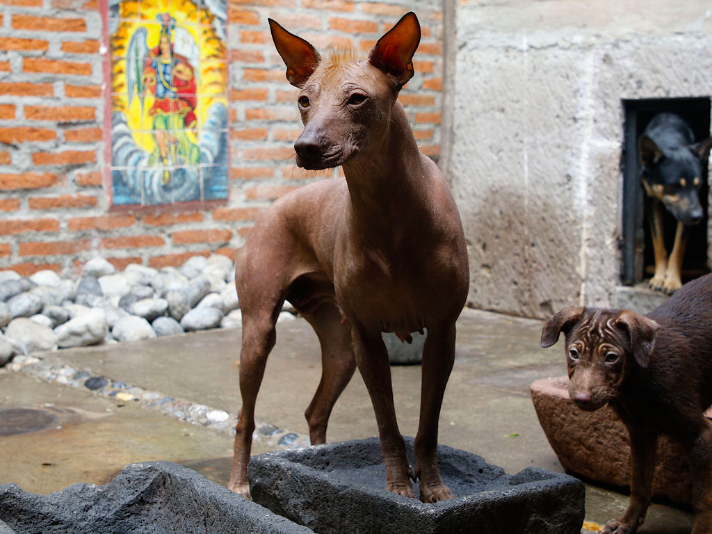

Descripción
El Xoloitzcuintle es una raza muy representativa de México y destaca por su aspecto singular. Muchas personas lo reconocen por la ausencia de pelo en algunas variedades y por su relación con la historia y la cultura mexicana.